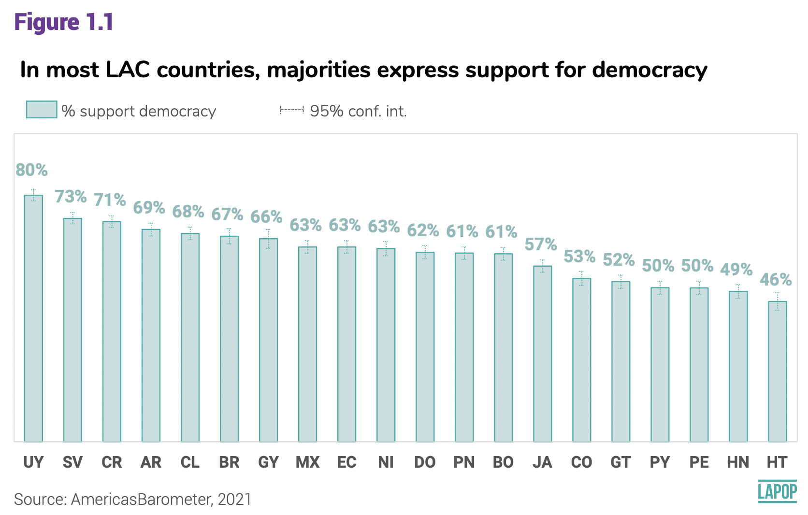
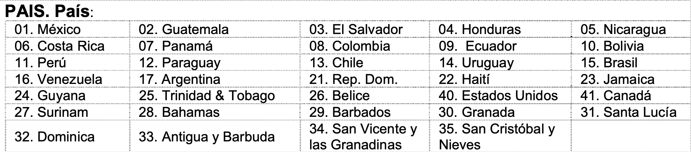

Introducción
En este documento se verán aspectos básicos del uso de R y
RStudio.
Objetos
En la sección anterior se mencionó que el Environment muestra los
objetos creados. En R se puede crear objetos y luego manipularlos. Por
ejemplo, el gráfico muestra el porcentaje de personas que apoyan a la
democracia en cada país. Si queremos guardar el resultados de Uruguay
(UY), podemos crear un objeto.

La siguiente línea de código crea un objeto llamado “UY” que almacena
el número 80. Esto objeto se muestra en el Environment, tanto el nombre,
como el valor que almacena.
UY = 80
Si quisiéramos calcular la diferencia en porcentaje entre Uruguay, el
país que muestra el mayor apoyo a la democracia, y Haití, el que muestra
el menor porcentaje, se puede calcular haciendo la resta del objeto
menos el valor del porcentaje en Haití. Cuando se corre este código,
RStudio nos muestra el resultado.
UY - 46
## [1] 34
Los objetos en R no solo almacenan números, sino que también pueden
guardar letras (o cadenas de caracteres).
El Barómetro de las Américas recoje información de casi todos los
países de las Américas. La tabla siguiente muestra los países en los que
se ha recogido información en alguna ronda.

Si queremos guardar el nombre de un país en un objeto, se puede
nombrar al objeto “pais1” y escribir el nombre del país (que es una
cadena de caracteres) entre comillas.
pais1 = "México"
Como se observa, el nombre del objeto no lleva tilde. Es posible
crear un objeto con tildes, pero se recomienda no hacerlo pues puede
crear problemas posteriores. La cadena de caracteres “México” sí incluye
la tilde. Esto no representa ningún problema.
Vectores
Un vector es un objeto que contiene un conjunto de elementos, sean
números o cadenas de caracteres, entre otros. Por ejemplo, podemos crear
un vector que almacene todos los porcentajes del Gráfico 1.1.
apoyo = c(80, 73, 71, 69, 68, 67, 66, 63, 63, 63, 62, 61, 61, 57, 53, 52, 50, 50, 49, 46)
De manera similar, podemos crear un vector con los nombres (o siglas)
de los países.
pais = c("UY", "SV", "CR", "AR", "CL", "BR", "GY", "MX", "EC", "NI", "DO", "PN", "BO", "JA", "CO", "GT", "PY", "PE", "HN", "HT")
No es necesario seguir el mismo orden del gráfico; sin embargo, es
recomendable por razones que se explicarán más abajo.
Se puede seleccionar elementos particulares de un vector usando
[…]. Por ejemplo, si queremos seleccionar el país de
Argentina, tanto su nombre, como su porcentaje, se tiene que colocar
entre corchetes la posición en la que se encuentra.
pais[4]
## [1] "AR"
apoyo[4]
## [1] 69
Funciones
Una función es un procedimiento que recibe un input y produce un
output. Por ejemplo, la función Y = X^2, recibe un valor X cualquiera,
por ejemplo 2, y devuelve un valor Y, en este caso 4. En R se tienen las
funciones algebraicas, como raíz cuadrada o logaritmo. Por ejemplo, la
función log(…) recibe un valor X y devuelve un valor Y
igual al logaritmo de X.
sqrt(36) #por squared root
## [1] 6
log(20)
## [1] 2.995732
También se puede aplicar una función a un conjunto de datos, como los
almacenados en un vector. Por ejemplo, si quisiéramos calcular la tasa
de personas que apoya a la democracia por cada 1000 habitantes en todos
los países, tendríamos que multiplicar el vector “pais” entre 10. En
este caso, la función de multiplicación se aplica a cada elemento del
vector.
apoyo2 = apoyo*10
apoyo2
## [1] 800 730 710 690 680 670 660 630 630 630 620 610 610 570 530 520 500 500 490
## [20] 460
Hay otras funciones que resultan más útiles para nuestros objetivos
porque trabajan sobre un conjunto de valores, como los almacenados en un
vector, calculando un valor único. Por ejemplo, si queremos calcular el
apoyo a la democracia promedio en todos los países mostrados en el
Gráfico 1.1 se puede usar la función mean(…).
mean(apoyo)
## [1] 61.2
Esta función recibe todos los valores de un vector, los suma y los
divide entre el número de observaciones, mostrando la media.
Otra funciones muy usadas en estadística son la mediana, la
desviación estándar, el mínimo, el máximo y la suma.
median(apoyo)
## [1] 62.5
sd(apoyo)
## [1] 9.070484
min(apoyo)
## [1] 46
max(apoyo)
## [1] 80
sum(apoyo)
## [1] 1224
El Gráfico 1.1 muestra los resultados para los países donde se tiene
información. Sin embargo, en algunos casos un vector puede incluir un
valor perdido. Por ejemplo, el gráfico no muestra información para
Venezuela, país donde no se realizó trabajo de campo por motivos de
seguridad. Si quisiéramos crear un vector que incluya este valor
faltante, se podría hacer así:
apoyo2 = c(apoyo, NA)
apoyo2
## [1] 80 73 71 69 68 67 66 63 63 63 62 61 61 57 53 52 50 50 49 46 NA
En el procedimiento que hemos realizado hemos usado el mismo nombre
“apoyo2”, por lo que hemos sobreescrito el vector con estos nuevos
resultados. La cadena de número ahora incluye un valor final NA.
Algunas funciones no pueden calcular directamente su procedimiento en
vectores que contienen valores NA. Por ejemplo, la función
mean.
mean(apoyo2)
## [1] NA
El cálculo directo de la media del vector “apoyo2” nos devuelve un
resultado NA. Para poder hacer el cálculo, indicándole a la función que
no tome en cuenta este valor NA, se tiene que usar la especificación
na.rm=True.
mean(apoyo2, na.rm=T)
## [1] 61.2
Paquetes
R es un proyecto colaborativo. Muchos desarrolladores producen nuevos
paquetes que son administrados por el mismo proyecto de R. Estos
paquetes pueden incluir muchas funciones que ayudan a manejar datos.
Por ejemplo, R tiene funciones nativas para importar bases de datos
de diferentes formatos, como Excel, SPSS o Stata. Cada formato tiene una
función específica, como read_csv o read_dta.
Sin embargo, unos desarrolladores han producido un paquete llamado “rio”
que incluye una función import que permite importar
cualquier tipo de base de datos. Este paquete no viene instalado en la
descarga básica de R, por lo que se tiene que instalar el paquete para
poder usarlo.
Para instalar un paquete se usa el comando
install.packages con el nombre del paquete que se quiere
instalar entre comillas. En este caso hemos usado un # antes del código
debido a que ya se tiene instalado el paquete. Esto sirve para mostrar
que los comentarios o líneas de código que queremos mostrar, pero que no
se corran, se pueden hacer con un # antes del comentario o código.
# install.packages("rio")
Una vez instalado, se tiene que activar el paquete para poder usar
sus funciones. Esto se hace con el comando library. Una vez
activado, se puede usar cualquier función de esta librería, como la
función import. Para activar ya no se requiere comillas.
Este procedimiento se puede verificar en el panel inferior derecho, en
la pestaña “Packages”. El paquete “rio” aparece con un check.
library(rio)
Dataframes
Los dataframes son estructuras de datos rectangulares. Como
convención, los dataframes tienen en sus columnas a los vectores y en
las filas a las observaciones. Para crear un dataframe se usa el comando
data.frame(...).
Por ejemplo, podemos crear un dataframe que junte los datos del
vector “pais” con los del vector “apoyo”. Estos dos vectores tienen que
tener las mismas dimensiones. Vemos en el Environment que ambos tienen
como dimensión [1:20]. Este dataframe se puede guardar en un objeto
“apoyoAL”.
apoyoAL = data.frame(pais, apoyo)
apoyoAL
## pais apoyo
## 1 UY 80
## 2 SV 73
## 3 CR 71
## 4 AR 69
## 5 CL 68
## 6 BR 67
## 7 GY 66
## 8 MX 63
## 9 EC 63
## 10 NI 63
## 11 DO 62
## 12 PN 61
## 13 BO 61
## 14 JA 57
## 15 CO 53
## 16 GT 52
## 17 PY 50
## 18 PE 50
## 19 HN 49
## 20 HT 46
Vemos que el objeto “apoyoAL” se ha guardado en una sección aparte
del Envorinment que se llama “Data”. Este objeto tiene 20 observaciones
(es decir, 20 filas o países) y dos variables (es decir, dos vectores o
dos columnas). Se puede hacer click en este objeto y se puede ver la
plancha de datos en una pestaña aparte.
Si se quisiera hacer un dataframe con los vectores “pais” y “apoyo2”,
R nos daría un mensaje de error debido a que estos vectores tienen
diferentes dimensiones.
Ahora, el vector “apoyo” forma parte de la base de datos “apoyoAL”.
Para poder usar las funciones en un dataframe se debe especificar la
columna de la que se quiere calcular la función. Por ejemplo, si ahora
se quisiera calcular el promedio de apoyo a la democracia desde la base
de datos “apoyoAL” se tiene que especificar la columna con “$”.
mean(apoyoAL$apoyo)
## [1] 61.2
En general, cualquier base de datos es una estructura rectangular
donde en las filas tenemos las observaciones y en las columnas, las
variables, lo que cambia es el número de filas y de columnas.
Por ejemplo, una base de datos del Barómetro de las Américas de un
país puede tener 1,500 observaciones (1,500 filas) y más de 100
variables (más de 100 columnas). En ese caso, cada observación
corresponde a una persona que respondió la encuesta y una columna (o
vector de datos) representa las respuestas de todos los entrevistados a
una pregunta del cuestionario.
Es más, la base de datos conjunta (el merge de datos) es la base de
datos de todos los países. Esta base de datos puede tener más de 30 mil
observaciones (es decir, todos los entrevistados en todos los países en
una ronda determinada) y más de 100 columnas.
Más allá del tamaño de la base de datos, las columnas son vectores a
los que se les puede aplicar funciones.
En la siguiente sección sobre importación de los datos del Barómetro
de las Américas en RStudio se verá la manera de descargar una base de
datos del proyecto y cargarla en RStudio.
Resumen
En este documento se han revisado los elementos básico de R, como
objetos y vectores, y las funciones básicas que se pueden aplicar a
estos objetos. También se ha revisado la manera de instalar librerías y
de activarlas para poder usar sus funciones. Finalmente, se ha explicado
la idea de un dataframe.
LS0tCnRpdGxlOiAiUHJvY2VkaW1pZW50b3MgYsOhc2ljb3MiCm91dHB1dDoKICBodG1sX2RvY3VtZW50OgogICAgdG9jOiB0cnVlCiAgICB0b2NfZmxvYXQ6IHRydWUKICAgIGNvbGxhcHNlZDogZmFsc2UKICAgIG51bWJlcl9zZWN0aW9uczogZmFsc2UKICAgIHRvY19kZXB0aDogMQogICAgY29kZV9kb3dubG9hZDogdHJ1ZQogICAgdGhlbWU6IGZsYXRseQogICAgI2NvZGVfZm9sZGluZzogaGlkZQplZGl0b3Jfb3B0aW9uczogCiAgbWFya2Rvd246IAogICAgd3JhcDogc2VudGVuY2UKLS0tCgpgYGB7ciBzZXR1cCwgaW5jbHVkZT1GQUxTRX0Ka25pdHI6Om9wdHNfY2h1bmskc2V0KG1lc3NhZ2U9RkFMU0Usd2FybmluZz1GQUxTRSwgY2FjaGU9VFJVRSkKYGBgCgpgYGB7Y3NzIGNvbG9yLCBlY2hvPUZBTFNFfQouY29sdW1ucyB7ZGlzcGxheTogZmxleDt9CmgxIHtjb2xvcjogIzMzNjZDQzt9CmBgYAoKIyBJbnRyb2R1Y2Npw7NuCgpFbiBlc3RlIGRvY3VtZW50byBzZSB2ZXLDoW4gYXNwZWN0b3MgYsOhc2ljb3MgZGVsIHVzbyBkZSBSIHkgUlN0dWRpby4KCiMgT2JqZXRvcwoKRW4gbGEgc2VjY2nDs24gYW50ZXJpb3Igc2UgbWVuY2lvbsOzIHF1ZSBlbCBFbnZpcm9ubWVudCBtdWVzdHJhIGxvcyBvYmpldG9zIGNyZWFkb3MuCkVuIFIgc2UgcHVlZGUgY3JlYXIgb2JqZXRvcyB5IGx1ZWdvIG1hbmlwdWxhcmxvcy4KUG9yIGVqZW1wbG8sIGVsIGdyw6FmaWNvIG11ZXN0cmEgZWwgcG9yY2VudGFqZSBkZSBwZXJzb25hcyBxdWUgYXBveWFuIGEgbGEgZGVtb2NyYWNpYSBlbiBjYWRhIHBhw61zLgpTaSBxdWVyZW1vcyBndWFyZGFyIGVsIHJlc3VsdGFkb3MgZGUgVXJ1Z3VheSAoVVkpLCBwb2RlbW9zIGNyZWFyIHVuIG9iamV0by4KCiFbXShGaWd1cmUxLjEucG5nKXt3aWR0aD0iNTM5In0KCkxhIHNpZ3VpZW50ZSBsw61uZWEgZGUgY8OzZGlnbyBjcmVhIHVuIG9iamV0byBsbGFtYWRvICJVWSIgcXVlIGFsbWFjZW5hIGVsIG7Dum1lcm8gODAuCkVzdG8gb2JqZXRvIHNlIG11ZXN0cmEgZW4gZWwgRW52aXJvbm1lbnQsIHRhbnRvIGVsIG5vbWJyZSwgY29tbyBlbCB2YWxvciBxdWUgYWxtYWNlbmEuCgpgYGB7ciBvYmpldG99ClVZID0gODAKYGBgCgpTaSBxdWlzacOpcmFtb3MgY2FsY3VsYXIgbGEgZGlmZXJlbmNpYSBlbiBwb3JjZW50YWplIGVudHJlIFVydWd1YXksIGVsIHBhw61zIHF1ZSBtdWVzdHJhIGVsIG1heW9yIGFwb3lvIGEgbGEgZGVtb2NyYWNpYSwgeSBIYWl0w60sIGVsIHF1ZSBtdWVzdHJhIGVsIG1lbm9yIHBvcmNlbnRhamUsIHNlIHB1ZWRlIGNhbGN1bGFyIGhhY2llbmRvIGxhIHJlc3RhIGRlbCBvYmpldG8gbWVub3MgZWwgdmFsb3IgZGVsIHBvcmNlbnRhamUgZW4gSGFpdMOtLgpDdWFuZG8gc2UgY29ycmUgZXN0ZSBjw7NkaWdvLCBSU3R1ZGlvIG5vcyBtdWVzdHJhIGVsIHJlc3VsdGFkby4KCmBgYHtyIHJlc3RhfQpVWSAtIDQ2CmBgYAoKTG9zIG9iamV0b3MgZW4gUiBubyBzb2xvIGFsbWFjZW5hbiBuw7ptZXJvcywgc2lubyBxdWUgdGFtYmnDqW4gcHVlZGVuIGd1YXJkYXIgbGV0cmFzIChvIGNhZGVuYXMgZGUgY2FyYWN0ZXJlcykuCgpFbCBCYXLDs21ldHJvIGRlIGxhcyBBbcOpcmljYXMgcmVjb2plIGluZm9ybWFjacOzbiBkZSBjYXNpIHRvZG9zIGxvcyBwYcOtc2VzIGRlIGxhcyBBbcOpcmljYXMuCkxhIHRhYmxhIHNpZ3VpZW50ZSBtdWVzdHJhIGxvcyBwYcOtc2VzIGVuIGxvcyBxdWUgc2UgaGEgcmVjb2dpZG8gaW5mb3JtYWNpw7NuIGVuIGFsZ3VuYSByb25kYS4KCiFbXShwYWlzLnBuZyl7d2lkdGg9IjU1MiJ9CgpTaSBxdWVyZW1vcyBndWFyZGFyIGVsIG5vbWJyZSBkZSB1biBwYcOtcyBlbiB1biBvYmpldG8sIHNlIHB1ZWRlIG5vbWJyYXIgYWwgb2JqZXRvICJwYWlzMSIgeSBlc2NyaWJpciBlbCBub21icmUgZGVsIHBhw61zIChxdWUgZXMgdW5hIGNhZGVuYSBkZSBjYXJhY3RlcmVzKSBlbnRyZSBjb21pbGxhcy4KCmBgYHtyIHBhaXN9CnBhaXMxID0gIk3DqXhpY28iCmBgYAoKQ29tbyBzZSBvYnNlcnZhLCBlbCBub21icmUgZGVsIG9iamV0byBubyBsbGV2YSB0aWxkZS4KRXMgcG9zaWJsZSBjcmVhciB1biBvYmpldG8gY29uIHRpbGRlcywgcGVybyBzZSByZWNvbWllbmRhIG5vIGhhY2VybG8gcHVlcyBwdWVkZSBjcmVhciBwcm9ibGVtYXMgcG9zdGVyaW9yZXMuCkxhIGNhZGVuYSBkZSBjYXJhY3RlcmVzICJNw6l4aWNvIiBzw60gaW5jbHV5ZSBsYSB0aWxkZS4KRXN0byBubyByZXByZXNlbnRhIG5pbmfDum4gcHJvYmxlbWEuCgojIFZlY3RvcmVzCgpVbiB2ZWN0b3IgZXMgdW4gb2JqZXRvIHF1ZSBjb250aWVuZSB1biBjb25qdW50byBkZSBlbGVtZW50b3MsIHNlYW4gbsO6bWVyb3MgbyBjYWRlbmFzIGRlIGNhcmFjdGVyZXMsIGVudHJlIG90cm9zLgpQb3IgZWplbXBsbywgcG9kZW1vcyBjcmVhciB1biB2ZWN0b3IgcXVlIGFsbWFjZW5lIHRvZG9zIGxvcyBwb3JjZW50YWplcyBkZWwgR3LDoWZpY28gMS4xLgoKYGBge3IgdmVjdG9yIHBvcmNlbnRhamVzfQphcG95byA9IGMoODAsIDczLCA3MSwgNjksIDY4LCA2NywgNjYsIDYzLCA2MywgNjMsIDYyLCA2MSwgNjEsIDU3LCA1MywgNTIsIDUwLCA1MCwgNDksIDQ2KQpgYGAKCkRlIG1hbmVyYSBzaW1pbGFyLCBwb2RlbW9zIGNyZWFyIHVuIHZlY3RvciBjb24gbG9zIG5vbWJyZXMgKG8gc2lnbGFzKSBkZSBsb3MgcGHDrXNlcy4KCmBgYHtyIHZlY3RvciBwYWlzfQpwYWlzID0gYygiVVkiLCAiU1YiLCAiQ1IiLCAiQVIiLCAiQ0wiLCAiQlIiLCAiR1kiLCAiTVgiLCAiRUMiLCAiTkkiLCAiRE8iLCAiUE4iLCAiQk8iLCAiSkEiLCAiQ08iLCAiR1QiLCAiUFkiLCAiUEUiLCAiSE4iLCAiSFQiKQpgYGAKCk5vIGVzIG5lY2VzYXJpbyBzZWd1aXIgZWwgbWlzbW8gb3JkZW4gZGVsIGdyw6FmaWNvOyBzaW4gZW1iYXJnbywgZXMgcmVjb21lbmRhYmxlIHBvciByYXpvbmVzIHF1ZSBzZSBleHBsaWNhcsOhbiBtw6FzIGFiYWpvLgoKU2UgcHVlZGUgc2VsZWNjaW9uYXIgZWxlbWVudG9zIHBhcnRpY3VsYXJlcyBkZSB1biB2ZWN0b3IgdXNhbmRvIGBb4oCmXWAuClBvciBlamVtcGxvLCBzaSBxdWVyZW1vcyBzZWxlY2Npb25hciBlbCBwYcOtcyBkZSBBcmdlbnRpbmEsIHRhbnRvIHN1IG5vbWJyZSwgY29tbyBzdSBwb3JjZW50YWplLCBzZSB0aWVuZSBxdWUgY29sb2NhciBlbnRyZSBjb3JjaGV0ZXMgbGEgcG9zaWNpw7NuIGVuIGxhIHF1ZSBzZSBlbmN1ZW50cmEuCgpgYGB7ciBzZWxlY2Npb25hciB2ZWN0b3J9CnBhaXNbNF0KYXBveW9bNF0KYGBgCgojIEZ1bmNpb25lcwoKVW5hIGZ1bmNpw7NuIGVzIHVuIHByb2NlZGltaWVudG8gcXVlIHJlY2liZSB1biBpbnB1dCB5IHByb2R1Y2UgdW4gb3V0cHV0LgpQb3IgZWplbXBsbywgbGEgZnVuY2nDs24gWSA9IFhcXjIsIHJlY2liZSB1biB2YWxvciBYIGN1YWxxdWllcmEsIHBvciBlamVtcGxvIDIsIHkgZGV2dWVsdmUgdW4gdmFsb3IgWSwgZW4gZXN0ZSBjYXNvIDQuCkVuIFIgc2UgdGllbmVuIGxhcyBmdW5jaW9uZXMgYWxnZWJyYWljYXMsIGNvbW8gcmHDrXogY3VhZHJhZGEgbyBsb2dhcml0bW8uClBvciBlamVtcGxvLCBsYSBmdW5jacOzbiBgbG9nKOKApilgIHJlY2liZSB1biB2YWxvciBYIHkgZGV2dWVsdmUgdW4gdmFsb3IgWSBpZ3VhbCBhbCBsb2dhcml0bW8gZGUgWC4KCmBgYHtyIHJhaXp9CnNxcnQoMzYpICNwb3Igc3F1YXJlZCByb290CmxvZygyMCkKYGBgCgpUYW1iacOpbiBzZSBwdWVkZSBhcGxpY2FyIHVuYSBmdW5jacOzbiBhIHVuIGNvbmp1bnRvIGRlIGRhdG9zLCBjb21vIGxvcyBhbG1hY2VuYWRvcyBlbiB1biB2ZWN0b3IuClBvciBlamVtcGxvLCBzaSBxdWlzacOpcmFtb3MgY2FsY3VsYXIgbGEgdGFzYSBkZSBwZXJzb25hcyBxdWUgYXBveWEgYSBsYSBkZW1vY3JhY2lhIHBvciBjYWRhIDEwMDAgaGFiaXRhbnRlcyBlbiB0b2RvcyBsb3MgcGHDrXNlcywgdGVuZHLDrWFtb3MgcXVlIG11bHRpcGxpY2FyIGVsIHZlY3RvciAicGFpcyIgZW50cmUgMTAuCkVuIGVzdGUgY2FzbywgbGEgZnVuY2nDs24gZGUgbXVsdGlwbGljYWNpw7NuIHNlIGFwbGljYSBhIGNhZGEgZWxlbWVudG8gZGVsIHZlY3Rvci4KCmBgYHtyIGFwb3lvMn0KYXBveW8yID0gYXBveW8qMTAKYXBveW8yCmBgYAoKSGF5IG90cmFzIGZ1bmNpb25lcyBxdWUgcmVzdWx0YW4gbcOhcyDDunRpbGVzIHBhcmEgbnVlc3Ryb3Mgb2JqZXRpdm9zIHBvcnF1ZSB0cmFiYWphbiBzb2JyZSB1biBjb25qdW50byBkZSB2YWxvcmVzLCBjb21vIGxvcyBhbG1hY2VuYWRvcyBlbiB1biB2ZWN0b3IsIGNhbGN1bGFuZG8gdW4gdmFsb3Igw7puaWNvLgpQb3IgZWplbXBsbywgc2kgcXVlcmVtb3MgY2FsY3VsYXIgZWwgYXBveW8gYSBsYSBkZW1vY3JhY2lhIHByb21lZGlvIGVuIHRvZG9zIGxvcyBwYcOtc2VzIG1vc3RyYWRvcyBlbiBlbCBHcsOhZmljbyAxLjEgc2UgcHVlZGUgdXNhciBsYSBmdW5jacOzbiBgbWVhbijigKYpYC4KCmBgYHtyIG1lZGlhfQptZWFuKGFwb3lvKQpgYGAKCkVzdGEgZnVuY2nDs24gcmVjaWJlIHRvZG9zIGxvcyB2YWxvcmVzIGRlIHVuIHZlY3RvciwgbG9zIHN1bWEgeSBsb3MgZGl2aWRlIGVudHJlIGVsIG7Dum1lcm8gZGUgb2JzZXJ2YWNpb25lcywgbW9zdHJhbmRvIGxhIG1lZGlhLgoKT3RyYSBmdW5jaW9uZXMgbXV5IHVzYWRhcyBlbiBlc3RhZMOtc3RpY2Egc29uIGxhIG1lZGlhbmEsIGxhIGRlc3ZpYWNpw7NuIGVzdMOhbmRhciwgZWwgbcOtbmltbywgZWwgbcOheGltbyB5IGxhIHN1bWEuCgpgYGB7ciBvdHJhcyBmdW5jaW9uZXN9Cm1lZGlhbihhcG95bykKc2QoYXBveW8pCm1pbihhcG95bykKbWF4KGFwb3lvKQpzdW0oYXBveW8pCmBgYAoKRWwgR3LDoWZpY28gMS4xIG11ZXN0cmEgbG9zIHJlc3VsdGFkb3MgcGFyYSBsb3MgcGHDrXNlcyBkb25kZSBzZSB0aWVuZSBpbmZvcm1hY2nDs24uClNpbiBlbWJhcmdvLCBlbiBhbGd1bm9zIGNhc29zIHVuIHZlY3RvciBwdWVkZSBpbmNsdWlyIHVuIHZhbG9yIHBlcmRpZG8uClBvciBlamVtcGxvLCBlbCBncsOhZmljbyBubyBtdWVzdHJhIGluZm9ybWFjacOzbiBwYXJhIFZlbmV6dWVsYSwgcGHDrXMgZG9uZGUgbm8gc2UgcmVhbGl6w7MgdHJhYmFqbyBkZSBjYW1wbyBwb3IgbW90aXZvcyBkZSBzZWd1cmlkYWQuClNpIHF1aXNpw6lyYW1vcyBjcmVhciB1biB2ZWN0b3IgcXVlIGluY2x1eWEgZXN0ZSB2YWxvciBmYWx0YW50ZSwgc2UgcG9kcsOtYSBoYWNlciBhc8OtOgoKYGBge3IgYXBveW8gY29uIE5BfQphcG95bzIgPSBjKGFwb3lvLCBOQSkKYXBveW8yCmBgYAoKRW4gZWwgcHJvY2VkaW1pZW50byBxdWUgaGVtb3MgcmVhbGl6YWRvIGhlbW9zIHVzYWRvIGVsIG1pc21vIG5vbWJyZSAiYXBveW8yIiwgcG9yIGxvIHF1ZSBoZW1vcyBzb2JyZWVzY3JpdG8gZWwgdmVjdG9yIGNvbiBlc3RvcyBudWV2b3MgcmVzdWx0YWRvcy4KTGEgY2FkZW5hIGRlIG7Dum1lcm8gYWhvcmEgaW5jbHV5ZSB1biB2YWxvciBmaW5hbCBOQS4KCkFsZ3VuYXMgZnVuY2lvbmVzIG5vIHB1ZWRlbiBjYWxjdWxhciBkaXJlY3RhbWVudGUgc3UgcHJvY2VkaW1pZW50byBlbiB2ZWN0b3JlcyBxdWUgY29udGllbmVuIHZhbG9yZXMgTkEuClBvciBlamVtcGxvLCBsYSBmdW5jacOzbiBgbWVhbmAuCgpgYGB7ciBtZWRpYSBhcG95bzJ9Cm1lYW4oYXBveW8yKQpgYGAKCkVsIGPDoWxjdWxvIGRpcmVjdG8gZGUgbGEgbWVkaWEgZGVsIHZlY3RvciAiYXBveW8yIiBub3MgZGV2dWVsdmUgdW4gcmVzdWx0YWRvIE5BLgpQYXJhIHBvZGVyIGhhY2VyIGVsIGPDoWxjdWxvLCBpbmRpY8OhbmRvbGUgYSBsYSBmdW5jacOzbiBxdWUgbm8gdG9tZSBlbiBjdWVudGEgZXN0ZSB2YWxvciBOQSwgc2UgdGllbmUgcXVlIHVzYXIgbGEgZXNwZWNpZmljYWNpw7NuIGBuYS5ybT1UcnVlYC4KCmBgYHtyIG1lZGlhIGFwb3lvIG5hLnJtfQptZWFuKGFwb3lvMiwgbmEucm09VCkKYGBgCgojIFBhcXVldGVzCgpSIGVzIHVuIHByb3llY3RvIGNvbGFib3JhdGl2by4KTXVjaG9zIGRlc2Fycm9sbGFkb3JlcyBwcm9kdWNlbiBudWV2b3MgcGFxdWV0ZXMgcXVlIHNvbiBhZG1pbmlzdHJhZG9zIHBvciBlbCBtaXNtbyBwcm95ZWN0byBkZSBSLgpFc3RvcyBwYXF1ZXRlcyBwdWVkZW4gaW5jbHVpciBtdWNoYXMgZnVuY2lvbmVzIHF1ZSBheXVkYW4gYSBtYW5lamFyIGRhdG9zLgoKUG9yIGVqZW1wbG8sIFIgdGllbmUgZnVuY2lvbmVzIG5hdGl2YXMgcGFyYSBpbXBvcnRhciBiYXNlcyBkZSBkYXRvcyBkZSBkaWZlcmVudGVzIGZvcm1hdG9zLCBjb21vIEV4Y2VsLCBTUFNTIG8gU3RhdGEuCkNhZGEgZm9ybWF0byB0aWVuZSB1bmEgZnVuY2nDs24gZXNwZWPDrWZpY2EsIGNvbW8gYHJlYWRfY3N2YCBvIGByZWFkX2R0YWAuClNpbiBlbWJhcmdvLCB1bm9zIGRlc2Fycm9sbGFkb3JlcyBoYW4gcHJvZHVjaWRvIHVuIHBhcXVldGUgbGxhbWFkbyAicmlvIiBxdWUgaW5jbHV5ZSB1bmEgZnVuY2nDs24gYGltcG9ydGAgcXVlIHBlcm1pdGUgaW1wb3J0YXIgY3VhbHF1aWVyIHRpcG8gZGUgYmFzZSBkZSBkYXRvcy4KRXN0ZSBwYXF1ZXRlIG5vIHZpZW5lIGluc3RhbGFkbyBlbiBsYSBkZXNjYXJnYSBiw6FzaWNhIGRlIFIsIHBvciBsbyBxdWUgc2UgdGllbmUgcXVlIGluc3RhbGFyIGVsIHBhcXVldGUgcGFyYSBwb2RlciB1c2FybG8uCgpQYXJhIGluc3RhbGFyIHVuIHBhcXVldGUgc2UgdXNhIGVsIGNvbWFuZG8gYGluc3RhbGwucGFja2FnZXNgIGNvbiBlbCBub21icmUgZGVsIHBhcXVldGUgcXVlIHNlIHF1aWVyZSBpbnN0YWxhciBlbnRyZSBjb21pbGxhcy4KRW4gZXN0ZSBjYXNvIGhlbW9zIHVzYWRvIHVuIFwjIGFudGVzIGRlbCBjw7NkaWdvIGRlYmlkbyBhIHF1ZSB5YSBzZSB0aWVuZSBpbnN0YWxhZG8gZWwgcGFxdWV0ZS4KRXN0byBzaXJ2ZSBwYXJhIG1vc3RyYXIgcXVlIGxvcyBjb21lbnRhcmlvcyBvIGzDrW5lYXMgZGUgY8OzZGlnbyBxdWUgcXVlcmVtb3MgbW9zdHJhciwgcGVybyBxdWUgbm8gc2UgY29ycmFuLCBzZSBwdWVkZW4gaGFjZXIgY29uIHVuIFwjIGFudGVzIGRlbCBjb21lbnRhcmlvIG8gY8OzZGlnby4KCmBgYHtyIGluc3RhbGFyIHBhcXVldGVzfQojIGluc3RhbGwucGFja2FnZXMoInJpbyIpCgpgYGAKClVuYSB2ZXogaW5zdGFsYWRvLCBzZSB0aWVuZSBxdWUgYWN0aXZhciBlbCBwYXF1ZXRlIHBhcmEgcG9kZXIgdXNhciBzdXMgZnVuY2lvbmVzLgpFc3RvIHNlIGhhY2UgY29uIGVsIGNvbWFuZG8gYGxpYnJhcnlgLgpVbmEgdmV6IGFjdGl2YWRvLCBzZSBwdWVkZSB1c2FyIGN1YWxxdWllciBmdW5jacOzbiBkZSBlc3RhIGxpYnJlcsOtYSwgY29tbyBsYSBmdW5jacOzbiBgaW1wb3J0YC4KUGFyYSBhY3RpdmFyIHlhIG5vIHNlIHJlcXVpZXJlIGNvbWlsbGFzLgpFc3RlIHByb2NlZGltaWVudG8gc2UgcHVlZGUgdmVyaWZpY2FyIGVuIGVsIHBhbmVsIGluZmVyaW9yIGRlcmVjaG8sIGVuIGxhIHBlc3Rhw7FhICJQYWNrYWdlcyIuCkVsIHBhcXVldGUgInJpbyIgYXBhcmVjZSBjb24gdW4gY2hlY2suCgpgYGB7ciBhY3RpdmFyfQpsaWJyYXJ5KHJpbykKYGBgCgojIERhdGFmcmFtZXMKCkxvcyBkYXRhZnJhbWVzIHNvbiBlc3RydWN0dXJhcyBkZSBkYXRvcyByZWN0YW5ndWxhcmVzLgpDb21vIGNvbnZlbmNpw7NuLCBsb3MgZGF0YWZyYW1lcyB0aWVuZW4gZW4gc3VzIGNvbHVtbmFzIGEgbG9zIHZlY3RvcmVzIHkgZW4gbGFzIGZpbGFzIGEgbGFzIG9ic2VydmFjaW9uZXMuClBhcmEgY3JlYXIgdW4gZGF0YWZyYW1lIHNlIHVzYSBlbCBjb21hbmRvIGBkYXRhLmZyYW1lKC4uLilgLgoKUG9yIGVqZW1wbG8sIHBvZGVtb3MgY3JlYXIgdW4gZGF0YWZyYW1lIHF1ZSBqdW50ZSBsb3MgZGF0b3MgZGVsIHZlY3RvciAicGFpcyIgY29uIGxvcyBkZWwgdmVjdG9yICJhcG95byIuCkVzdG9zIGRvcyB2ZWN0b3JlcyB0aWVuZW4gcXVlIHRlbmVyIGxhcyBtaXNtYXMgZGltZW5zaW9uZXMuClZlbW9zIGVuIGVsIEVudmlyb25tZW50IHF1ZSBhbWJvcyB0aWVuZW4gY29tbyBkaW1lbnNpw7NuIFsxOjIwXS4KRXN0ZSBkYXRhZnJhbWUgc2UgcHVlZGUgZ3VhcmRhciBlbiB1biBvYmpldG8gImFwb3lvQUwiLgoKYGBge3IgZGF0YWZyYW1lfQphcG95b0FMID0gZGF0YS5mcmFtZShwYWlzLCBhcG95bykKYXBveW9BTApgYGAKClZlbW9zIHF1ZSBlbCBvYmpldG8gImFwb3lvQUwiIHNlIGhhIGd1YXJkYWRvIGVuIHVuYSBzZWNjacOzbiBhcGFydGUgZGVsIEVudm9yaW5tZW50IHF1ZSBzZSBsbGFtYSAiRGF0YSIuCkVzdGUgb2JqZXRvIHRpZW5lIDIwIG9ic2VydmFjaW9uZXMgKGVzIGRlY2lyLCAyMCBmaWxhcyBvIHBhw61zZXMpIHkgZG9zIHZhcmlhYmxlcyAoZXMgZGVjaXIsIGRvcyB2ZWN0b3JlcyBvIGRvcyBjb2x1bW5hcykuClNlIHB1ZWRlIGhhY2VyIGNsaWNrIGVuIGVzdGUgb2JqZXRvIHkgc2UgcHVlZGUgdmVyIGxhIHBsYW5jaGEgZGUgZGF0b3MgZW4gdW5hIHBlc3Rhw7FhIGFwYXJ0ZS4KClNpIHNlIHF1aXNpZXJhIGhhY2VyIHVuIGRhdGFmcmFtZSBjb24gbG9zIHZlY3RvcmVzICJwYWlzIiB5ICJhcG95bzIiLCBSIG5vcyBkYXLDrWEgdW4gbWVuc2FqZSBkZSBlcnJvciBkZWJpZG8gYSBxdWUgZXN0b3MgdmVjdG9yZXMgdGllbmVuIGRpZmVyZW50ZXMgZGltZW5zaW9uZXMuCgpBaG9yYSwgZWwgdmVjdG9yICJhcG95byIgZm9ybWEgcGFydGUgZGUgbGEgYmFzZSBkZSBkYXRvcyAiYXBveW9BTCIuClBhcmEgcG9kZXIgdXNhciBsYXMgZnVuY2lvbmVzIGVuIHVuIGRhdGFmcmFtZSBzZSBkZWJlIGVzcGVjaWZpY2FyIGxhIGNvbHVtbmEgZGUgbGEgcXVlIHNlIHF1aWVyZSBjYWxjdWxhciBsYSBmdW5jacOzbi4KUG9yIGVqZW1wbG8sIHNpIGFob3JhIHNlIHF1aXNpZXJhIGNhbGN1bGFyIGVsIHByb21lZGlvIGRlIGFwb3lvIGEgbGEgZGVtb2NyYWNpYSBkZXNkZSBsYSBiYXNlIGRlIGRhdG9zICJhcG95b0FMIiBzZSB0aWVuZSBxdWUgZXNwZWNpZmljYXIgbGEgY29sdW1uYSBjb24gIlwkIi4KCmBgYHtyIGFwb3lvIGRhdGF9Cm1lYW4oYXBveW9BTCRhcG95bykKYGBgCgpFbiBnZW5lcmFsLCBjdWFscXVpZXIgYmFzZSBkZSBkYXRvcyBlcyB1bmEgZXN0cnVjdHVyYSByZWN0YW5ndWxhciBkb25kZSBlbiBsYXMgZmlsYXMgdGVuZW1vcyBsYXMgb2JzZXJ2YWNpb25lcyB5IGVuIGxhcyBjb2x1bW5hcywgbGFzIHZhcmlhYmxlcywgbG8gcXVlIGNhbWJpYSBlcyBlbCBuw7ptZXJvIGRlIGZpbGFzIHkgZGUgY29sdW1uYXMuCgpQb3IgZWplbXBsbywgdW5hIGJhc2UgZGUgZGF0b3MgZGVsIEJhcsOzbWV0cm8gZGUgbGFzIEFtw6lyaWNhcyBkZSB1biBwYcOtcyBwdWVkZSB0ZW5lciAxLDUwMCBvYnNlcnZhY2lvbmVzICgxLDUwMCBmaWxhcykgeSBtw6FzIGRlIDEwMCB2YXJpYWJsZXMgKG3DoXMgZGUgMTAwIGNvbHVtbmFzKS4KRW4gZXNlIGNhc28sIGNhZGEgb2JzZXJ2YWNpw7NuIGNvcnJlc3BvbmRlIGEgdW5hIHBlcnNvbmEgcXVlIHJlc3BvbmRpw7MgbGEgZW5jdWVzdGEgeSB1bmEgY29sdW1uYSAobyB2ZWN0b3IgZGUgZGF0b3MpIHJlcHJlc2VudGEgbGFzIHJlc3B1ZXN0YXMgZGUgdG9kb3MgbG9zIGVudHJldmlzdGFkb3MgYSB1bmEgcHJlZ3VudGEgZGVsIGN1ZXN0aW9uYXJpby4KCkVzIG3DoXMsIGxhIGJhc2UgZGUgZGF0b3MgY29uanVudGEgKGVsIG1lcmdlIGRlIGRhdG9zKSBlcyBsYSBiYXNlIGRlIGRhdG9zIGRlIHRvZG9zIGxvcyBwYcOtc2VzLgpFc3RhIGJhc2UgZGUgZGF0b3MgcHVlZGUgdGVuZXIgbcOhcyBkZSAzMCBtaWwgb2JzZXJ2YWNpb25lcyAoZXMgZGVjaXIsIHRvZG9zIGxvcyBlbnRyZXZpc3RhZG9zIGVuIHRvZG9zIGxvcyBwYcOtc2VzIGVuIHVuYSByb25kYSBkZXRlcm1pbmFkYSkgeSBtw6FzIGRlIDEwMCBjb2x1bW5hcy4KCk3DoXMgYWxsw6EgZGVsIHRhbWHDsW8gZGUgbGEgYmFzZSBkZSBkYXRvcywgbGFzIGNvbHVtbmFzIHNvbiB2ZWN0b3JlcyBhIGxvcyBxdWUgc2UgbGVzIHB1ZWRlIGFwbGljYXIgZnVuY2lvbmVzLgoKRW4gbGEgc2lndWllbnRlIHNlY2Npw7NuIHNvYnJlIGltcG9ydGFjacOzbiBkZSBsb3MgZGF0b3MgZGVsIEJhcsOzbWV0cm8gZGUgbGFzIEFtw6lyaWNhcyBlbiBSU3R1ZGlvIHNlIHZlcsOhIGxhIG1hbmVyYSBkZSBkZXNjYXJnYXIgdW5hIGJhc2UgZGUgZGF0b3MgZGVsIHByb3llY3RvIHkgY2FyZ2FybGEgZW4gUlN0dWRpby4KCiMgUmVzdW1lbgoKRW4gZXN0ZSBkb2N1bWVudG8gc2UgaGFuIHJldmlzYWRvIGxvcyBlbGVtZW50b3MgYsOhc2ljbyBkZSBSLCBjb21vIG9iamV0b3MgeSB2ZWN0b3JlcywgeSBsYXMgZnVuY2lvbmVzIGLDoXNpY2FzIHF1ZSBzZSBwdWVkZW4gYXBsaWNhciBhIGVzdG9zIG9iamV0b3MuClRhbWJpw6luIHNlIGhhIHJldmlzYWRvIGxhIG1hbmVyYSBkZSBpbnN0YWxhciBsaWJyZXLDrWFzIHkgZGUgYWN0aXZhcmxhcyBwYXJhIHBvZGVyIHVzYXIgc3VzIGZ1bmNpb25lcy4KRmluYWxtZW50ZSwgc2UgaGEgZXhwbGljYWRvIGxhIGlkZWEgZGUgdW4gZGF0YWZyYW1lLgo=